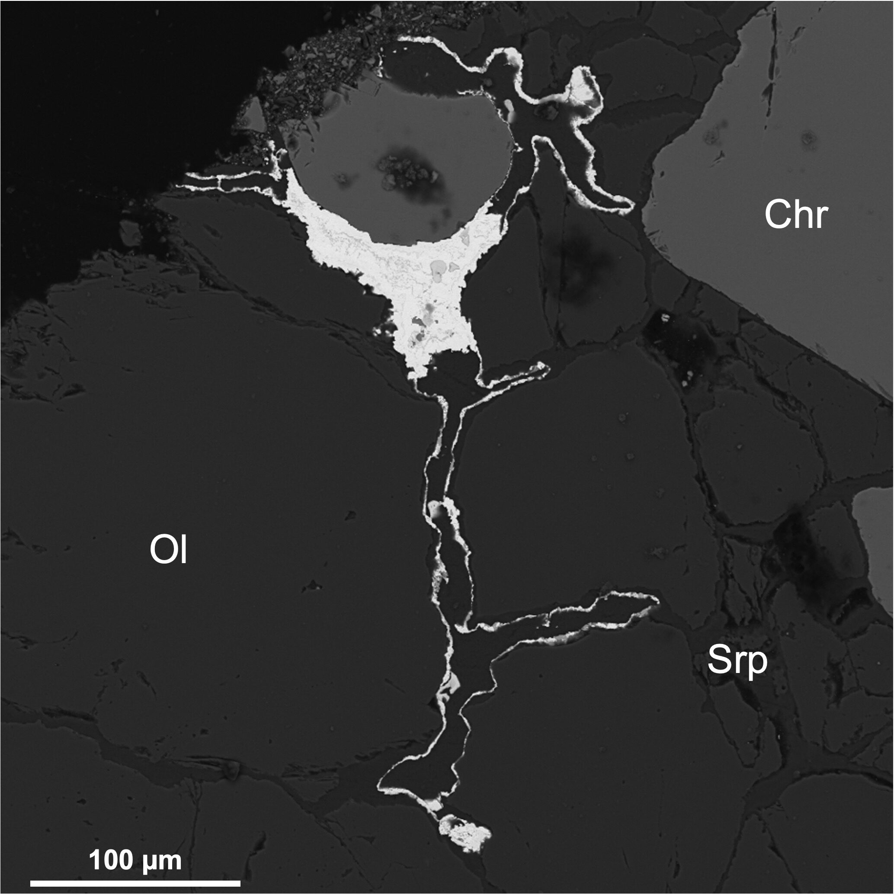
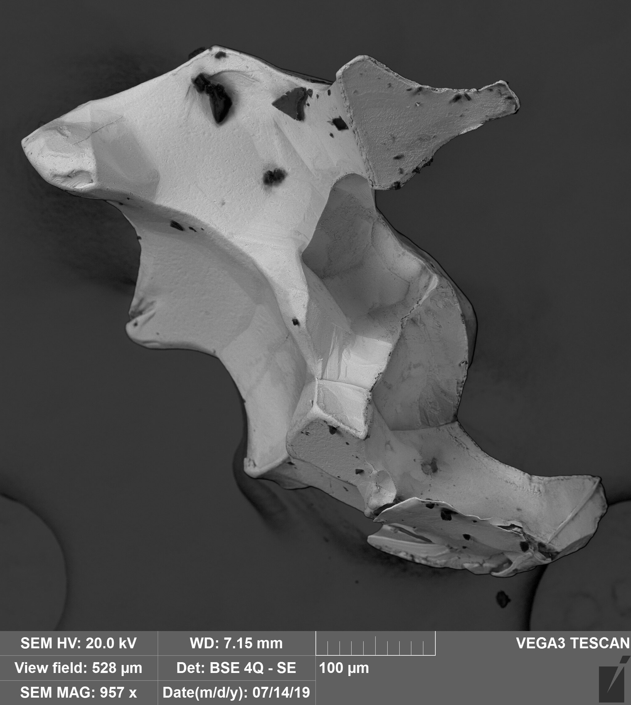
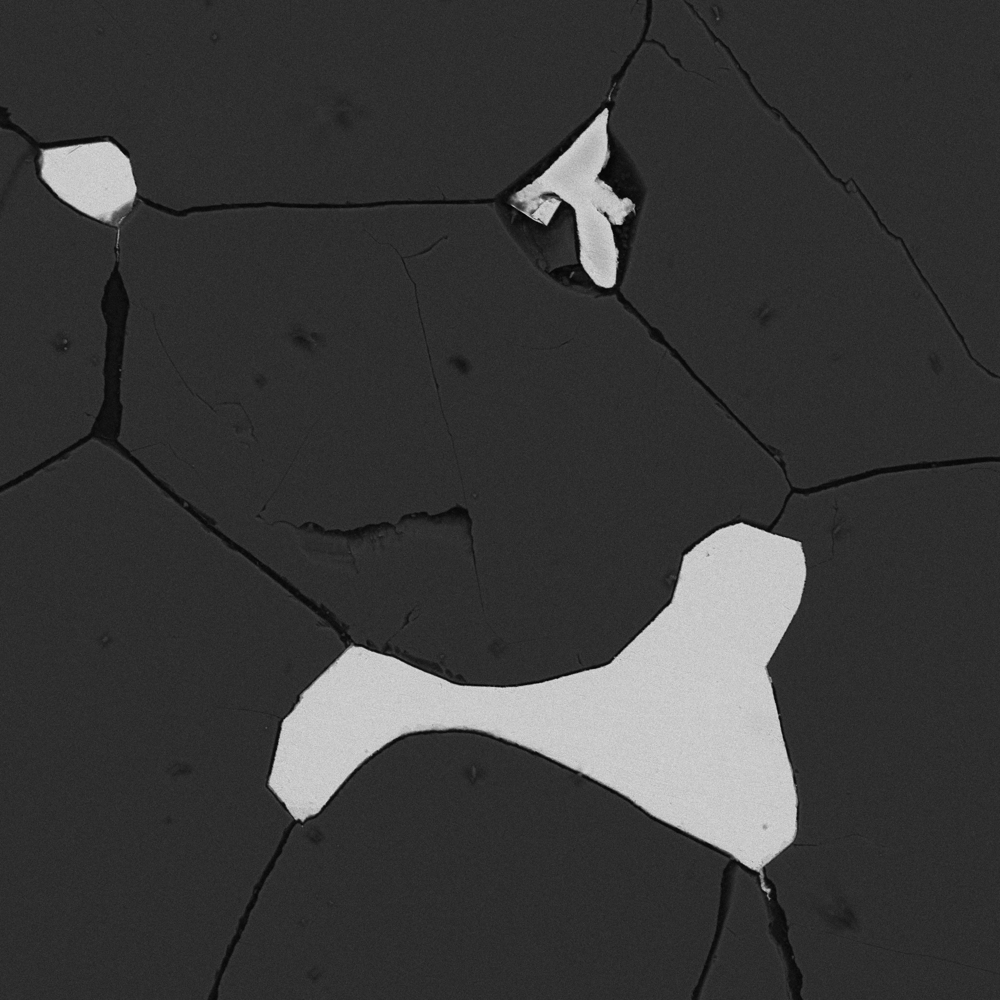
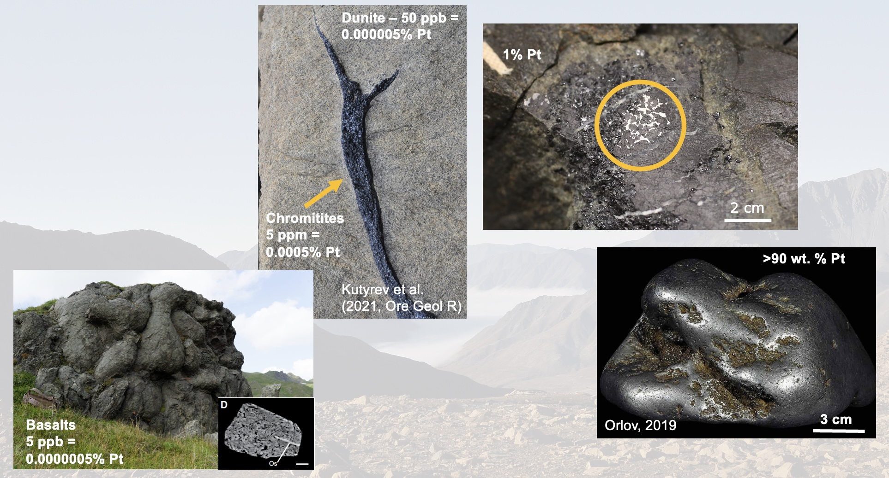
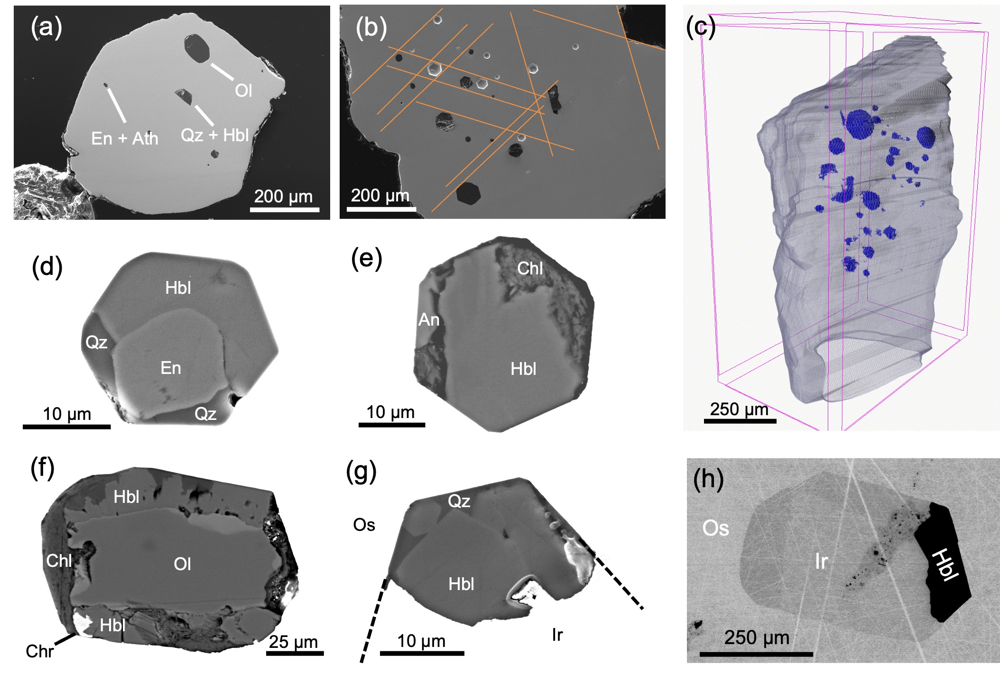
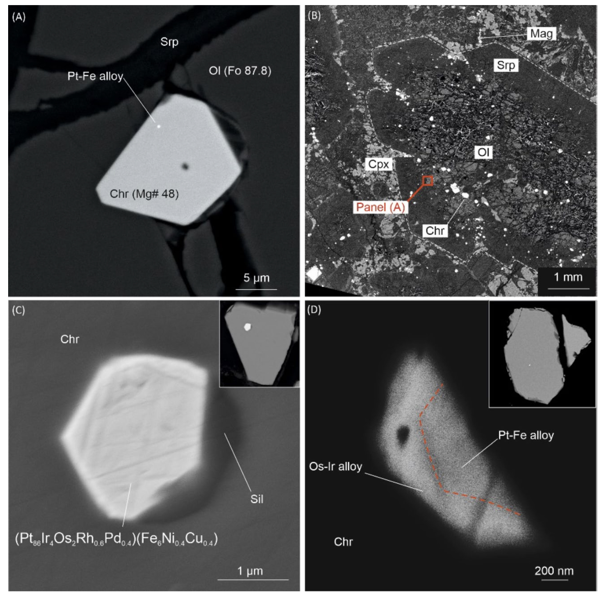
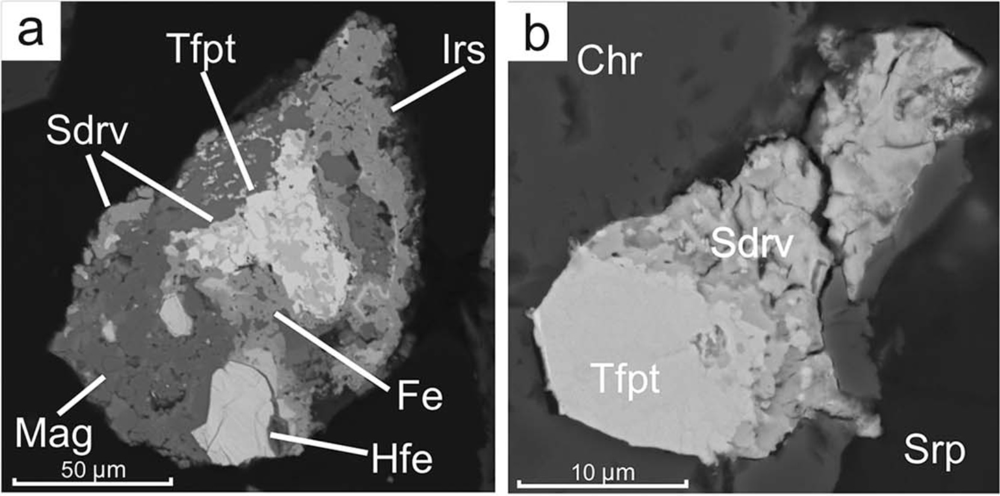
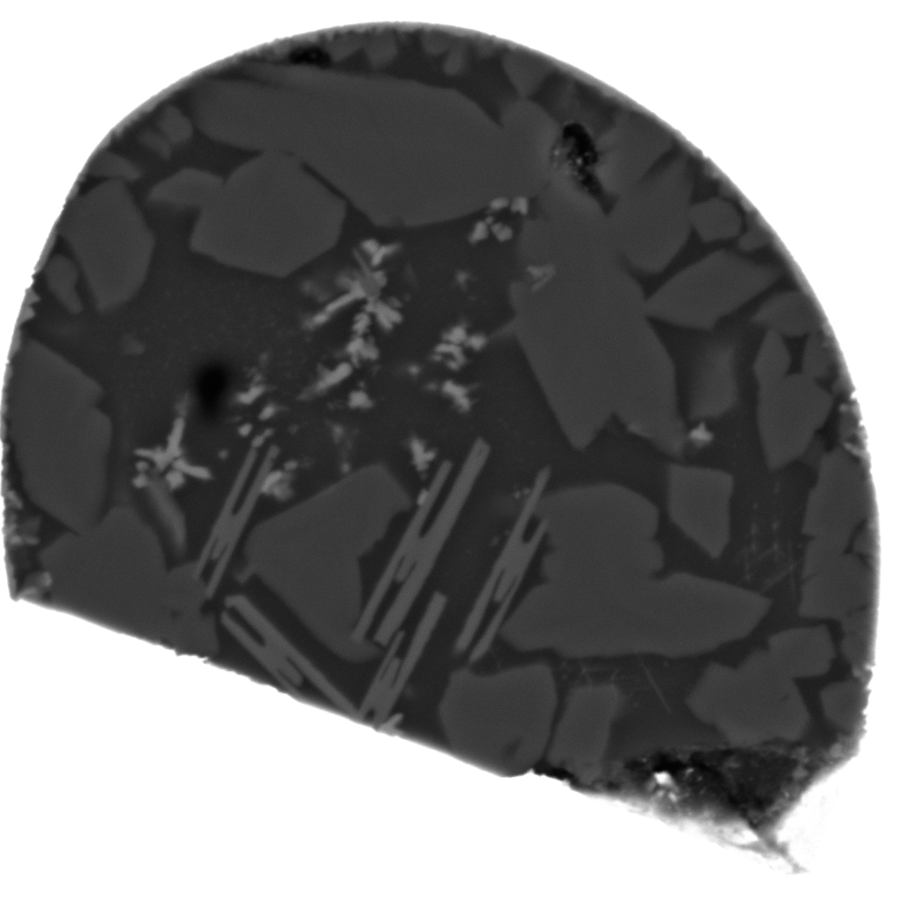

Where PGMs occur and why they matter
Platinum-group elements (PGE) are among the least abundant elements in the Earth's crust and mantle (Lyubetskaya and Korenaga, 2007). Their concentrations are several orders of magnitude lower than those of the rare earth elements. Nevertheless, more than 169 platinum-group minerals (PGM) have been approved by the International Mineralogical Association (Zaccarini et al., 2026). These minerals occur in mantle xenoliths, ophiolites, and crystalline ultramafic rocks. They may also be present in rich sulfide ores and as nm-scale inclusions in minerals from volcanic rocks such as picrites and komatiites. PGM also occur in placers, both modern, such as those of the Urals and Alaska, and ancient, such as the Witwatersrand Basin, where small detrital PGM have been found.
This page attempts to make a short summary of my work on PGM. It begins with placer concentrates from the Koryak-Kamchatka belt, where PGM assemblages are described before the bedrock source is fully resolved. It then moves into hosted PGM hosted by lode chromitites and dunite of Ural-Alaskan type complexes from Far East Russia, where inclusions and textural relations begin to challenge simple orthomagmatic models. From there, the scale shifts again to small PGM in volcanic rocks – inclusions in Cr-spinel that give direct evidence of platinum-group elements fractionation in magmatic processes, before the later part of the page turns to remobilization, rare new minerals, and finally the confirmed formation of natural IrO2.

Placer assemblages
My work on PGM began during my undergraduate studies with placers, because they provide a concentrated and surprisingly information-rich entry point into ultramafic source systems. In the Prizhimny Creek placer of the Koryak Highlands (Kutyrev et al., 2018), Pt-Fe alloys occur with Os-bearing phases, PtRh intermetallic material, sulfides and arsenides of the platinum-group elements, chromite, and Cr-magnetite. That assemblage already shows that a placer is not just a mechanical concentration of durable grains. It is a filtered mineralogical archive that preserves clues to primary alloy composition, inclusion assemblages, oxidation state, and the character of the eroded source intrusion. In this case, the data pointed toward a weakly eroded Ural-Alaskan-type system and suggested clinopyroxenites of the Prizhimny massif as a plausible bedrock source.

Lode chromitites and bedrock sources
The move from placer grains to lode chromitites changed the problem completely. In placers, the question was what assemblage had survived erosion and transport, and how they are characteristic of a bedrock source, and whethere there are mineralogical hints on economic potential. In bedrock, the question became how such assemblages formed in the first place. Work on isoferroplatinum from lode chromitite schlieren in the Matysken complex made that shift explicit.

The mass-balance problem
The mass-balance problem is simple. Platinum in basaltic or ultramafic magmas is normally present at very low levels, usually in the ppb range. Even strongly enriched rocks typically contain only ppm-level Pt. To form a visible Pt-Fe nugget, platinum must therefore be concentrated by many orders of magnitude, from trace levels in melt to local concentrations of wt.% and finally to a nearly pure alloy containing tens of wt.% Pt. That degree of enrichment is difficult to explain by simple direct crystallization from a small ordinary magmatic reservoir.
In case of sulfide deposits, this can be explained through extremely high PGE partitioning coefficient between sulfide and silicate liquid. But what is the explanation in oxidized arc systems, where we do not see evidence of sulfides participation in early stage PGE extraction from magma?

Inclusions in PGM
The inclusions were not simple trapped droplets of an ultramafic melt. They contained diopside, hydrous silicates, apatite, plagioclase, K-feldspar, silica, and other phases that sit uneasily inside any straightforward orthomagmatic picture for platinum mineralization in dunite-hosted chromitites. Similar contrasts had already been noted in alluvial nuggets, but here they could be examined directly in bedrock PGM intergrown with Cr-spinel.

PGM in primitive arc magmas and volcanic rocks
The next step in this work moved away from coarse nuggets and chromitite schlieren and into primitive arc magmas, where PGE can be followed before they are concentrated into obvious ore-scale minerals. That shift matters because it brings the problem closer to first-order magmatic controls. In the Olyutorsky arc, including the Tumrok Range, the volcanic rocks are unusually primitive. High-Mg picrites and basalts preserve olivine with Fo contents up to 94 mol% and high-Cr# spinel, while melt inclusions record Mg-rich and, in the southern segment, distinctly high-K compositions. These rocks are useful not because they already contain spectacular PGM, but because they preserve the source conditions under which noble metals entered the arc system. In later collaborative work on the Tumrok volcano-plutonic complex, this became a linked volcanic and intrusive framework rather than a volcanic story alone.
The Tolbachik study then asked how noble metals behave once such primitive melts begin to differentiate. There the picture is no longer one of large visible PGM, but of early fractionation, oxidation state, and partitioning into phases such as Cr-spinel, laurite, alloys, and sulfide melts. Ir, Ru, and Rh behave compatibly during magmatic differentiation, whereas Cu and Pd are incompatible, arguing against strong early control by sulfide liquid in that case. The negative Ru anomaly in Tolbachik lavas suggested more oxidizing mantle conditions beneath the arc and helped connect noble-metal behavior to Cr-spinel and Ru-bearing phases. This stage of the work was important because it placed PGE back into primitive volcanic systems and showed that the story begins long before nugget formation. By the time large alloys or unusual secondary phases are seen in ultramafic rocks, a great deal of fractionation and redistribution may already have happened upstream in the magmatic system.

Redistribution, alteration, and new minerals
A later stage of the work shifted the center of gravity again. The problem was no longer only how PGM formed, but how they were modified after formation. Once that question is taken seriously, alteration ceases to be a minor complication and becomes part of the mineralogical record itself. Work on awaruite mineralization and hydrous metamorphism treated PGE behavior under low-temperature overprint directly, while Pt-He dating of platinum mineralization in Ural-Alaskan-type complexes addressed remobilization in time as well as in texture. These studies pushed the interpretation away from a purely magmatic framework and toward one in which serpentinization, hydrous alteration, and late-stage fluid pathways can reorganize metal budgets that were initially established in much hotter systems.
The same change in emphasis appears in the new-mineral work. Sidorovite, PtFe3, was described from the Snegovaya River placer as part of complex Pt-Fe intermetallic assemblages and secondary rims formed after isoferroplatinum. Its proposed formation through incorporation of Fe0 during low-temperature alteration linked Pt mineralogy directly to reduction processes associated with H2-bearing fluids generated during serpentinization. Kufahrite extended that interest in rare Pt-bearing phases further. Taken together, these papers were not simply taxonomic additions. They were a way of tracking subtle low-temperature modification in systems that had previously been described mostly in terms of primary alloy crystallization. By this point, the central question had become not just which PGM are present, but which of them are primary, which are secondary, and what that distinction implies for the history of ultramafic rocks, chromitites, and related placers.

Iridium oxide and the redox endmember
The iridium oxide work closes this sequence because it takes a question that first appeared in placer assemblages and resolves it with much stronger evidence. Already in the Prizhimny Creek study, native osmium was described as being replaced by a phase of IrO2 composition during oxidation, but that phase had not yet been confirmed in structural and spectroscopic terms. The later Chemical Geology paper finally did that. X-ray absorption spectroscopy showed that the Ir-O phase is genuine IrO2 with Ir4+, and atom probe tomography revealed that it occurs as thin films along the boundaries of metallic PGE-rich domains. At the same time, mass-balance relationships showed that Rh, Ru, and Pt remain mainly metallic, whereas Os is partly oxidized and strongly depleted relative to the original Os-Ir-Ru alloy.
What makes that result important is not only the identification of a rare mineralogical end product. It is the fact that the phase relations do not behave as a simple equilibrium model would predict. Formation of IrO2 appears to require very oxidizing conditions, yet metallic Ru survives where conventional phase relations suggest it should oxidize first. That mismatch points to strongly localized redox pathways, kinetic control, or other small-scale nonequilibrium processes that are easy to miss if PGM are treated as inert relics. In that sense, the iridium oxide paper is less a detached endpoint than a culmination of the whole trajectory. The early work established assemblages. The chromitite work exposed the mass-balance problem and the importance of inclusions. The later studies on alteration and new minerals showed that overprint matters. The IrO2 study then demonstrated, at the nanoscale, that PGM can be reorganized far more radically than many conventional genetic models allow.
